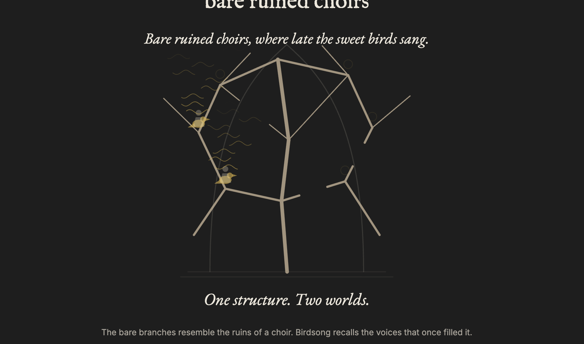

The Inheritance of Form

How writing techniques evolve, spread and breed.
Who gets to make culture? Who gets to change it?
I'm interested in the primitives and parameters of artistic style: rhythm, sound, syntax, metaphor and space. What if we could work with these like colors on a painter's palette? What if we could breed new techniques?
Part of my interest comes from thinking about generative AI. It's becoming easier to produce things, but I'm interested in who gets to shape the forms through which we express ourselves. How can we build tools that give people more agency over those forms?
Taking apart Shakespeare
I've been using Shakespeare's Sonnet 73 to experiment with isolating and manipulating literary techniques.
or none, or few
When yellow leaves, or none, or few, do hang
Shakespeare makes you imagine something and then revises it while you're still imagining it. I wanted to play with the timing of that revision.
bare ruined choirs
Bare ruined choirs, where late the sweet birds sang.
There are several relationships at work in this metaphor: branches and architecture, birds and singers, winter and abandonment. In this sketch, you can manipulate these relationships independently.
Breeding techniques
What happens if we take the techniques from these two lines and combine them?
The trees are choirs, or ruins, or the memory of song.
Here, each correction changes the metaphor itself. We could then take that construction and use it to write something entirely different:
The house is a refuge, or a prison, or the echo of a voice.
I'm interested in building a creative system in which a writer can save, modify, combine and share constructions like these.
A little culture of writers
I also want to understand how these techniques might evolve within a community.
I've been experimenting with an agent-based model in NetLogo. Twelve simulated writers construct poems, invent techniques, learn from one another and forget.
I'm particularly interested in whether an invention that doesn't seem terribly useful today might become an important ingredient in somebody else's invention tomorrow. How do we preserve things whose value we don't yet understand?
One surprising observation from an earlier, symbolic version of the model was that preserving more diverse techniques didn't necessarily lead to more discoveries.
I'm now experimenting with the difference between sharing finished writing and sharing the techniques used to produce it.
What's next?
I'm working toward a playable writing instrument, Old Words New, and a computational engine, Inheritance.
I'd like to create a medium in which people can experiment with the materials of literary style, invent new forms and make those inventions available to other writers.
I'm interested in how much more inventive we might become collectively if we designed creative systems around that possibility.